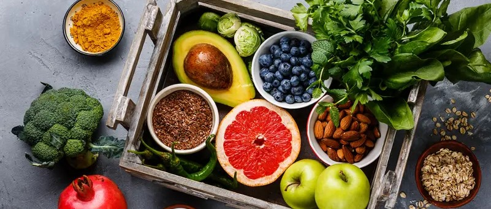

Using inline(span.ing)
What is a healthy diet?
Eating a healthy diet is not about strict limitations, staying unrealistically thin, or depriving yourself of the foods you love. Rather, it's about feeling great, having more energy, improving your health, and boosting your mood.

While some extreme diets may suggest otherwise, we all need a balance of protein, fat, carbohydrates, fiber, vitamins, and minerals in our diets to sustain a healthy body. You don't need to eliminate certain categories of food from your diet, but rather select the healthiest options from cach category. Using span for following: Fruit/vegetables/ legumes (e.g. lentils and beans) nuts and whole grains (e.g. unprocessed maize/ millet/ cats/ wheat and brown rice)